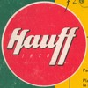

Festival
Swing Festival
Georgian underground electronic music on the Black Sea coast — three days, three stages, local and international artists far from the capital.
3
Stages
70+
Artists (2021)
3
Days
Golden Lake
Poti coastline
Editions
Past & present
2021
Inaugural Edition
Golden Lake · Poti
30 July – 1 August
Three open-air stages beside the Black Sea. DVS1, Jane Fitz, Francesco Del Garda, NEWA, HVL, Toke Live, and dozens more from Georgia’s underground.
Stages: Main · Lake · Forest
2022
Batumi & Poti
Batumi clubs · Golden Lake
5 – 7 August
A seaside adventure across Bahn, Zgvaze, Gate, Botanico, and the lake site. Helena Hauff, Oscar Mulero, Zurkin, Sevda, Skyra, Hatsvali, and the wider Georgian scene.
Club stages + open-air return
Winter
Mtkvarze Takeover
Mtkvarze · Tbilisi
6 – 7 January
Swing moves indoors: Call Super, Alec Falconer, Ash Scholem, Hatsvali B2B Toke, and a focused club program between festival seasons.
2 nights · Mtkvarze
Lineup
Artists who played
Featured acts from past editions. link each artist to SoundCloud, RA, or Instagram.
Toke
Live · Co-founder
2021 · Mtkvarze
DVS1
DJ
2021
Jane Fitz
DJ
2021
HVL
Live
2021
Francesco Del Garda
DJ
2021
NEWA
DJ
2021
Hatsvali
DJ · B2B
2021 · Mtkvarze
Call Super
DJ / Live
Mtkvarze

Helena Hauff
DJ
2022
Zurkin
DJ
2021 · 2022
Sevda
DJ
2021 · 2022

Skyra
Live
2021 · 2022
Full 2021 lineup included 70+ artists — Evan Baggs, Gacha, Hamatsuki, Kilski, Kraumur, Nicole, Rydeen, Ash Scholem, and many more.
Gallery
Moments
Next edition
Stay in the loop
Dates, tickets, and lineup for the next Swing edition will appear here. Follow the festival channels for announcements.